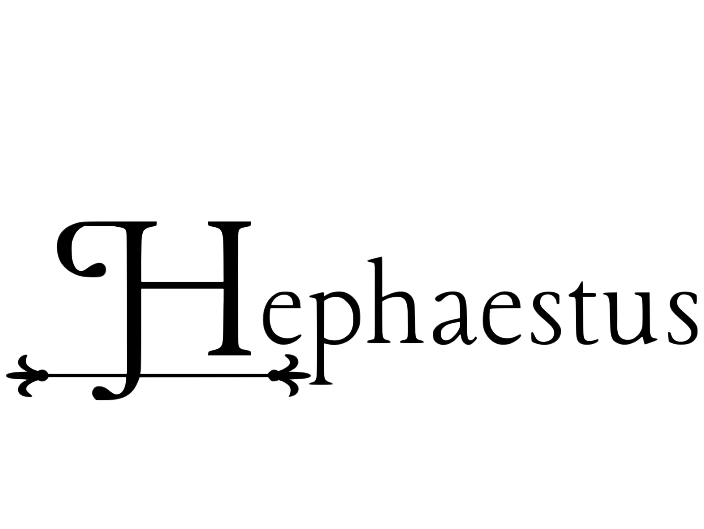
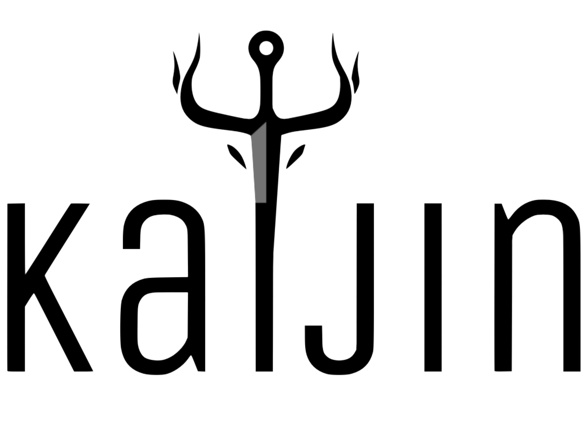
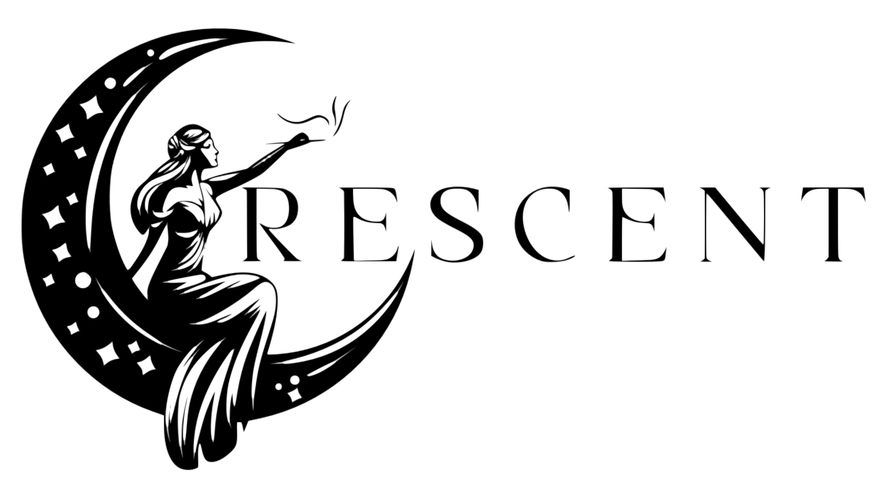

Home > Blog
Founded by a unique human and passionate weapon aficionados, Gudang Senjata is more than just a marketplace, we are a thriving community dedicated to the appreciation of the art, history, and culture of weaponry. Our journey began with a shared love for arms and armor, fueled by a desire to create a space where enthusiasts could gather, learn, and celebrate their passion for weaponry.
At Gudang Senjata, we cater to a diverse audience. Whether you're an adventurous spirit seeking relics of ancient battles, a modern-day knight in pursuit of finely crafted arms, a historian unraveling the stories behind legendary weapons, or a practitioner honing your skills, you'll find something here to ignite your interest. Our curated collection spans across genres and eras, offering a blend of traditional craftsmanship and innovative designs.
We believe that the allure of weaponry extends beyond practical use, it embodies a deep-rooted connection to human history and imagination. It is this understanding that drives our mission to provide a comprehensive platform for enthusiasts, collectors, and professionals alike. Through Gudang Senjata, we aim to foster a community where knowledge is shared, stories are told, and the legacy of weapons is celebrated.
Join us on our quest to explore the realms of armament, where every piece tells a story and every encounter sparks curiosity. Whether you're a novice eager to learn or a seasoned collector in search of the extraordinary, Gudang Senjata welcomes you to embark on a journey through the fascinating world of weaponry.